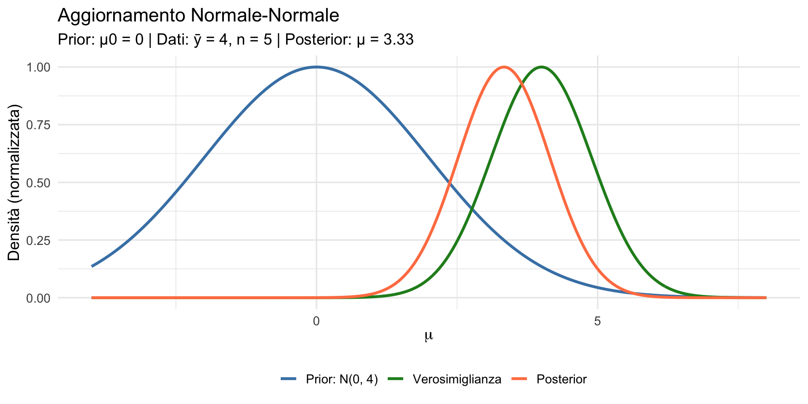
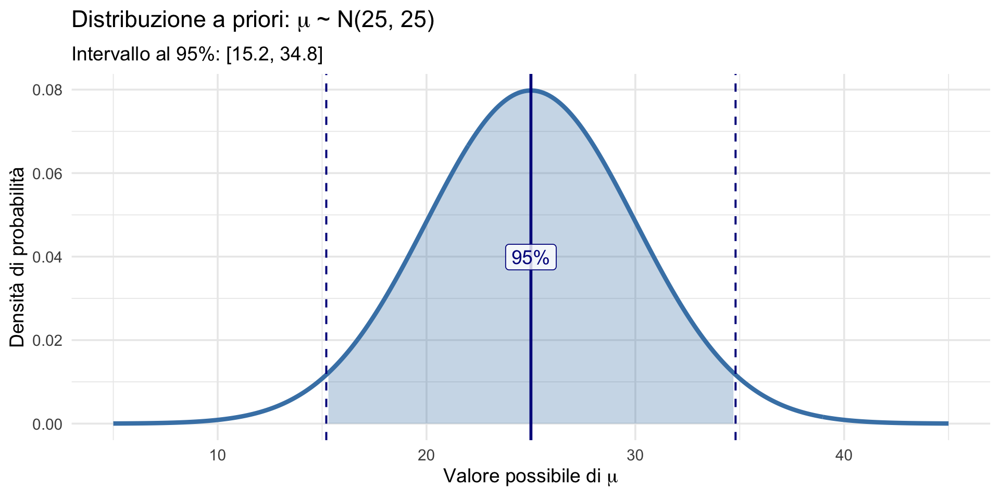
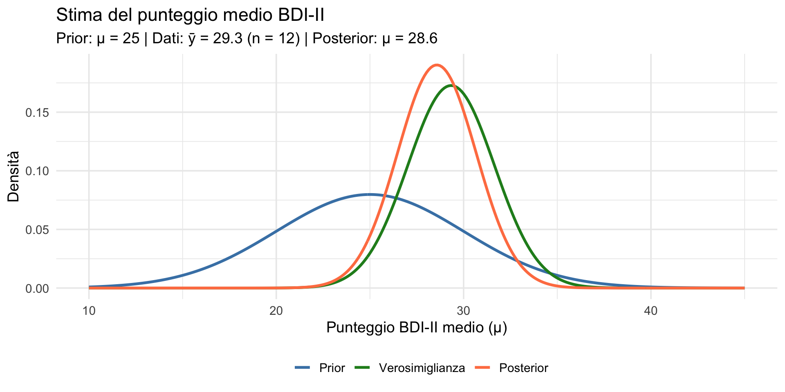
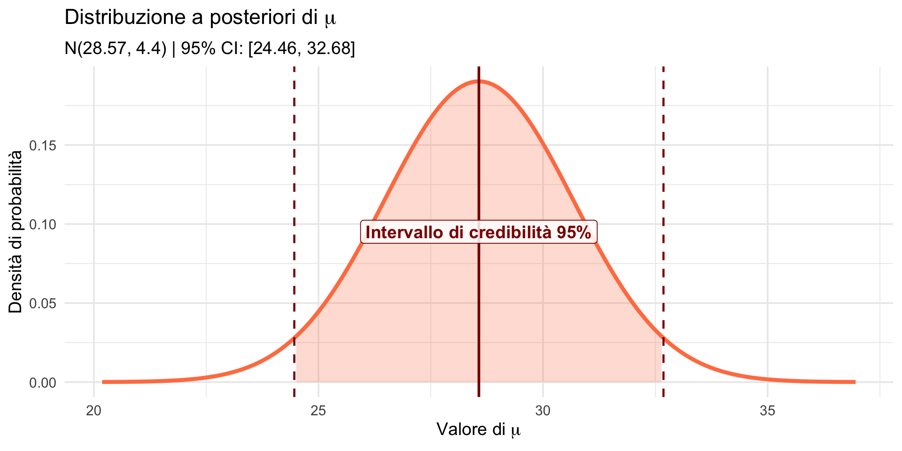
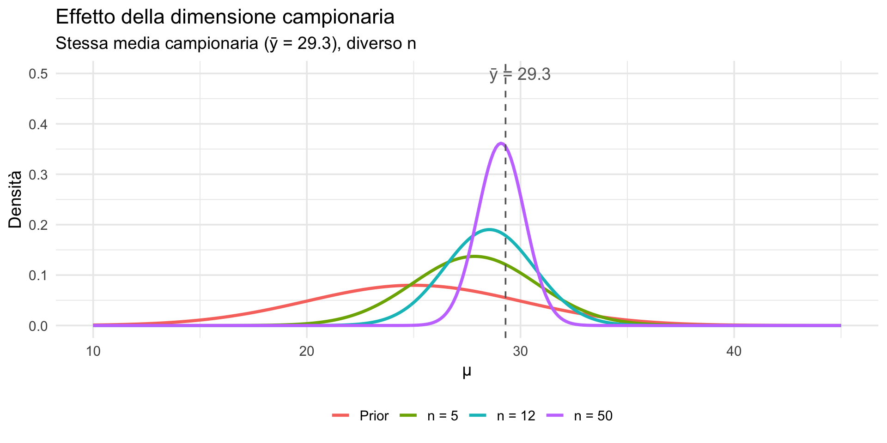
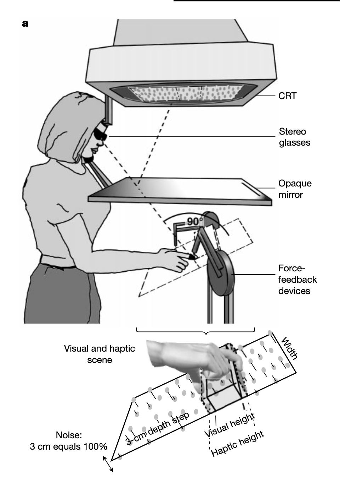
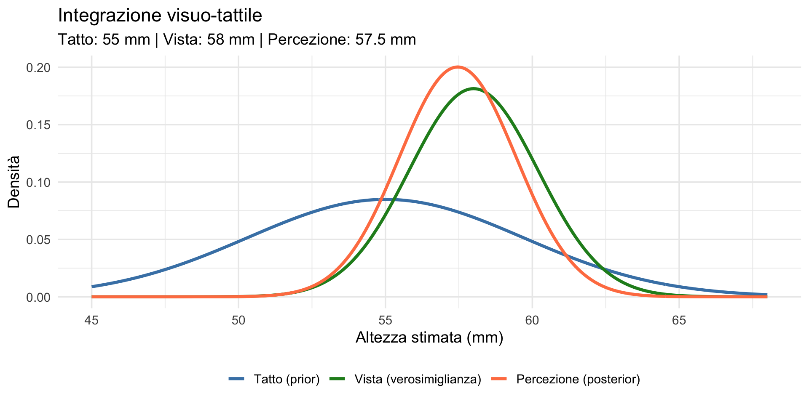

![]()
Prior: Normale( 25 , 25 )Intervallo 95% prior: [ 15.2 , 34.8 ]Normale-Normale — Segmento 2
29 ottobre 2026
Nel segmento precedente abbiamo visto la prima famiglia coniugata:
L’aggiornamento si riduceva a sommare conteggi. Ma cosa succede con dati continui?
In psicologia spesso abbiamo variabili continue:
Domanda: come stimiamo la media \(\mu\) di queste variabili con l’approccio bayesiano?
Assunzione sui dati:
\[ y_i \sim \text{Normale}(\mu, \sigma^2). \]
I dati sono normalmente distribuiti con media \(\mu\) (sconosciuta) e varianza \(\sigma^2\) (per ora, nota).
Prior sulla media:
\[ \mu \sim \text{Normale}(\mu_0, \sigma_0^2). \]
Se i dati sono Normali con media \(\mu\) e il prior su \(\mu\) è Normale, allora il posterior su \(\mu\) è ancora Normale:
\[ \mu \mid \text{dati} \sim \text{Normale}(\mu_{\text{post}}, \sigma_{\text{post}}^2). \]
Il meccanismo è analogo alla Beta-Binomiale: la forma si conserva e bastano poche operazioni aritmetiche per calcolare i nuovi parametri.
Data un’osservazione \(\bar{y}\) (media campionaria) basata su \(n\) dati:
Media del posterior:
\[ \mu_{\text{post}} = \frac{\frac{\mu_0}{\sigma_0^2} + \frac{n \bar{y}}{\sigma^2}}{\frac{1}{\sigma_0^2} + \frac{n}{\sigma^2}} \]
Varianza del posterior:
\[ \sigma_{\text{post}}^2 = \frac{1}{\frac{1}{\sigma_0^2} + \frac{n}{\sigma^2}} \]
La media del posterior è una media ponderata tra prior e dati:
\[ \mu_{\text{post}} = w \cdot \mu_0 + (1 - w) \cdot \bar{y} \]
dove il peso del prior è:
\[ w = \frac{\sigma^2 / n}{\sigma_0^2 + \sigma^2 / n} \]
Nella Beta-Binomiale, l’aggiornamento si faceva sommando conteggi. Nella Normale-Normale, l’aggiornamento è una media ponderata — dove i pesi dipendono dalle precisioni relative.
Il posterior è un compromesso tra ciò che credevamo prima (\(\mu_0\)) e ciò che dicono i dati (\(\bar{y}\)).
È lo stesso principio che abbiamo visto con la Beta-Binomiale: la “forza” del prior (\(\alpha + \beta\) nel caso Beta, \(1/\sigma_0^2\) nel caso Normale) compete con la “forza” dei dati (\(n\) osservazioni). Con abbastanza dati, il posterior converge verso la media campionaria.

Uno psicologo clinico vuole stimare il livello medio di depressione in un gruppo di pazienti usando il Beck Depression Inventory-II (BDI-II, range 0-63).
Conoscenza pregressa (prior):
Prior: \(\mu \sim \text{Normale}(25, 5^2)\)

Lo psicologo raccoglie dati da n = 12 pazienti. Assumiamo che la variabilità individuale (\(\sigma\)) sia nota dalla letteratura: \(\sigma = 8\).
# Precisioni (inverso della varianza)
prec_prior <- 1 / sigma0^2
prec_dati <- n / sigma^2
prec_post <- prec_prior + prec_dati
# Media del posterior
mu_post <- (prec_prior * mu0 + prec_dati * ybar) / prec_post
# SD del posterior
sigma_post <- sqrt(1 / prec_post)
cat("Posterior: Normale(", round(mu_post, 2), ",", round(sigma_post^2, 2), ")\n")Posterior: Normale( 28.57 , 4.4 )Media posterior: 28.57 SD posterior: 2.1 
Prior: media attesa = 25, SD = 5.
Dati: media osservata = 29.3, n = 12.
Posterior: media stimata = 28.6, SD = 2.1.
Il posterior è un compromesso: più vicino ai dati (29.3) che al prior (25) e molto più preciso (SD = 2.1 vs 5).

“Qual è la probabilità che il punteggio medio sia > 28 (depressione moderata-grave)?”
C’è circa il 60.7% di probabilità che il gruppo abbia depressione moderata-grave. Questa è una probabilità diretta sul parametro — non un valore-\(p\), non una procedura ripetuta: è una risposta diretta alla domanda che il clinico si pone.
Prima dei dati (prior): pensavamo a un gruppo con depressione moderata, con punteggio medio atteso intorno a 25 (ampia incertezza: circa 20-30).
Dopo i dati (posterior): la stima del punteggio medio sale a circa 28.6, con un intervallo di credibilità al 95% di circa [24.5, 32.7].
I dati spostano in modo sostanziale la nostra valutazione verso livelli più elevati di depressione, ma manteniamo una quantificazione esplicita dell’incertezza residua.
Confrontiamo tre scenari (stessa media campionaria \(\bar{y}\) = 29.3):
n = 5: μ = 27.84 , σ = 2.91 n = 12: μ = 28.54 , σ = 2.1 n = 50: μ = 29.09 , σ = 1.1 
Con più dati:
È lo stesso principio che abbiamo visto in tutte le lezioni precedenti:
con abbastanza evidenza, i dati vincono sempre.
Lo studio di Ernst e Banks (2002) pubblicato su Nature offre un’elegante dimostrazione di come la mente combini informazioni provenienti da sensi diversi — in questo caso vista e tatto — per costruire una percezione unificata del mondo.
La domanda centrale è: quando guardiamo un oggetto e contemporaneamente lo tocchiamo, come decide la mente quale senso “fidarsi” di più?
La mente si comporta come uno statistico bayesiano ottimale: pesa le informazioni di ciascun senso in base alla loro affidabilità (cioè, l’inverso della varianza). Se la vista fornisce informazioni precise, domina la percezione; se la vista è perturbata, il tatto assume un ruolo più importante.
Questo è esattamente il principio della media ponderata che abbiamo appena studiato nella Normale-Normale.
Nello studio di Ernst e Banks:
I partecipanti dovevano giudicare l’altezza di una barra orizzontale che potevano sia vedere (attraverso uno schermo stereoscopico) sia toccare (usando dispositivi a feedback di forza – force feedback).

Figura 1: Apparato sperimentale (Ernst & Banks, 2002).
L’aspetto ingegnoso dell’esperimento era che i ricercatori potevano manipolare indipendentemente:
Quando il rumore visivo aumentava, la vista diventava meno affidabile e la percezione si spostava verso l’informazione tattile — esattamente come predetto dalla regola di aggiornamento bayesiano.
Immaginiamo che un partecipante tocchi una barra alta 55 mm ma la veda come alta 58 mm.
Se la vista è più precisa del tatto (SD = 2.2 mm vs 4.7 mm), la formula bayesiana assegna: peso della vista 82%, peso del tatto 18%.

La percezione finale (57.5 mm) è un compromesso, più vicino alla vista perché la vista è più precisa.
Combinare le informazioni non solo produce una stima ottimale, ma riduce l’incertezza:
| Fonte | Incertezza (SD) |
|---|---|
| Solo tatto | 4.7 mm |
| Solo vista | 2.2 mm |
| Combinazione | 2 mm |
La percezione combinata è più precisa di entrambi i sensi usati singolarmente.
È lo stesso fenomeno che vediamo nell’inferenza bayesiana: il posterior ha sempre varianza minore sia del prior sia della verosimiglianza.
Quando i ricercatori aggiungevano rumore allo stimolo visivo (SD passa da 2.2 a 11 mm), i pesi cambiavano drasticamente:
| Condizione | Peso vista | Peso tatto |
|---|---|---|
| Senza rumore | 82% | 18% |
| Con rumore | 15% | 85% |
La percezione si sposta verso il tatto: 55.5 mm (più vicina ai 55 mm del tatto).
| Integrazione sensoriale | Inferenza Normale-Normale |
|---|---|
| Stima tattile | Prior \(\mu_0\) |
| Stima visiva | Media campionaria \(\bar{y}\) |
| Varianza tattile \(\sigma^2_T\) | Varianza del prior \(\sigma^2_0\) |
| Varianza visiva \(\sigma^2_V\) | Varianza dei dati \(\sigma^2/n\) |
| Percezione finale | Posterior \(\mu_{\text{post}}\) |
La mente implementa naturalmente lo stesso principio statistico che usiamo nell’inferenza bayesiana: pesare le fonti di informazione in base alla loro affidabilità.
Questo è il senso profondo della statistica bayesiana: non è solo una tecnica matematica, ma riflette il modo in cui la mente elabora informazioni sul mondo.
Lezioni 5-11 — Probabilità, distribuzioni, verosimiglianza.
Lezioni 14-16 — Inferenza frequentista e crisi di replicabilità.
Lezione 17 — I tre ingredienti bayesiani. Approssimazione a griglia.
Lezione 18 — Apprendimento sequenziale. Il posterior diventa il prior.
Lezione 19 (oggi) — Le famiglie coniugate: Beta-Binomiale e Normale-Normale. Le scorciatoie analitiche e il parallelo con la percezione.
Nella prossima lezione impareremo a riassumere e comunicare i risultati dell’inferenza bayesiana: media, mediana, intervalli di credibilità e HDI.
Normale-Normale: Prior Normale + dati Normali → Posterior Normale.
Il posterior è una media ponderata tra prior e dati, con pesi dati dalle precisioni.
La precisione aumenta con più dati.
Applicabile a variabili continue: punteggi, tempi, misure fisiologiche.
La mente è bayesiana: l’integrazione sensoriale segue la stessa logica della media ponderata.
| Aspetto | Beta-Binomiale | Normale-Normale |
|---|---|---|
| Tipo di dati | Discreti (successi/insuccessi) | Continui |
| Parametro | Probabilità \(\theta \in [0,1]\) | Media \(\mu \in \mathbb{R}\) |
| Prior | Beta(\(\alpha\), \(\beta\)) | Normale(\(\mu_0\), \(\sigma_0^2\)) |
| Aggiornamento | Somma conteggi | Media ponderata |
| “Forza” prior | \(\alpha + \beta\) | \(1/\sigma_0^2\) |
| Applicazioni | Tassi di risposta, accuratezza | Punteggi, tempi |
Materiale di studio: https://ccaudek.github.io/utet-companion/
Prossimo argomento:
“Sintesi della distribuzione a posteriori: media, mediana, intervalli di credibilità.”
Vedremo come riassumere e comunicare i risultati dell’inferenza bayesiana — trasformando una distribuzione in decisioni e report scientifici.